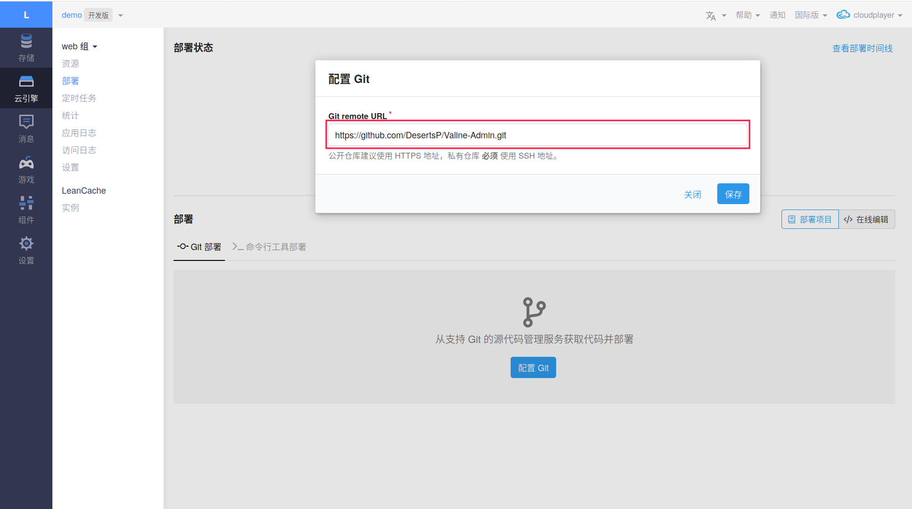
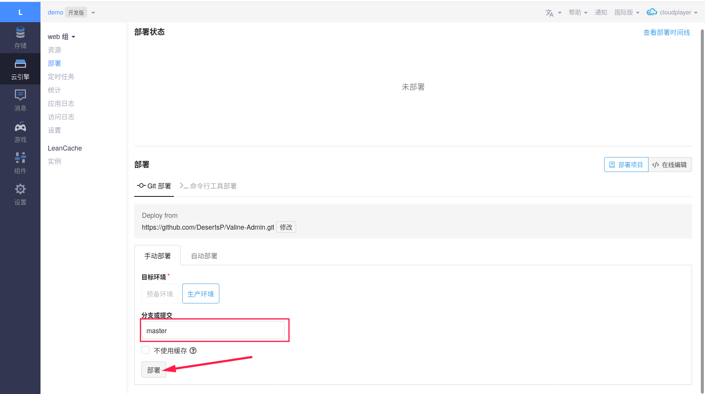
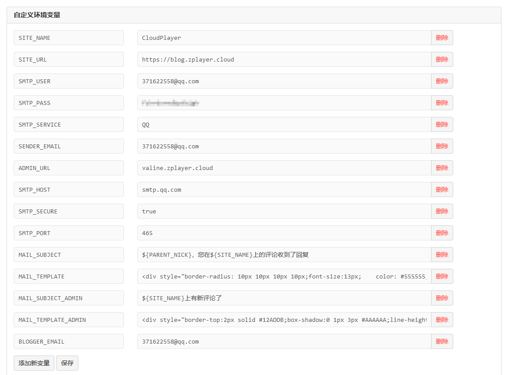
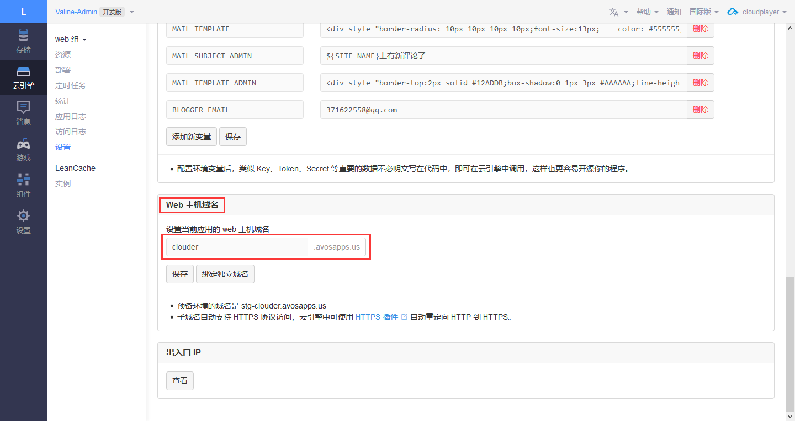
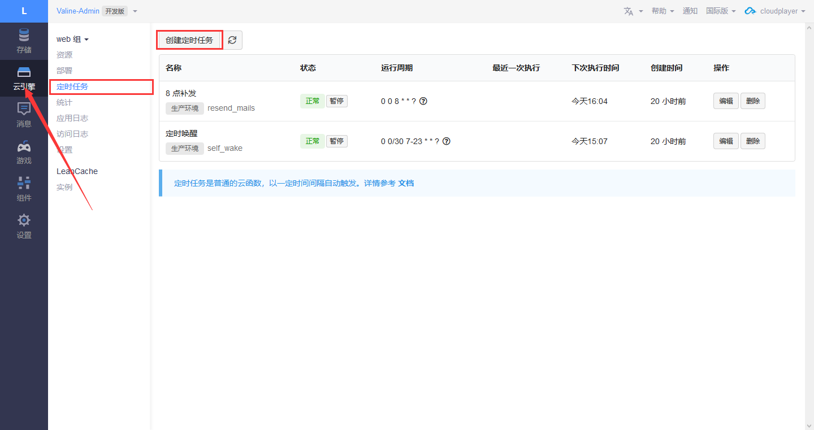

Valine 评论回复增强
由于 Valine 本身的评论回复并不是很好用, 而且现在的版本甚至已经取消了评论回复的功能, 因此我们需要 Valine-Admin 来增强.
部署
首先我推荐使用国际版的 LeanCloud 而不是华东华北节点 (不用身份证绑定域名也不用备案啥的) , 将数据迁移到国际版可以用 LeanCloud 的数据导入导出功能实现, 不过要注意导出功能只能在中午 12 点前使用.
进入你原本的 Valine 评论的 LeanCloud 应用, 选择 云引擎 -> 部署 -> 部署项目 -> Git 源码部署 -> 配置 Git 中填入 https://github.com/DesertsP/Valine-Admin.git , 然后保存.

分支或提交 填入 master , 然后点击部署

第一次部署需要一点点时间.
配置
接下来就是配置了. 进入 云引擎 -> 设置 界面配置环境变量.

| 变量 | 值 | 说明 |
|---|---|---|
| SITE_NAME | 网站名称 | |
| SITE_URL | 网站地址 | |
| SMTP_USER | SMTP 用户名 (一般为你的邮箱) | |
| SMTP_PASS | 授权码 (详情请看获取授权码) | |
| SMTP_SERVICE | 邮件服务提供商 | |
| SENDER_EMAIL | 发件人邮箱 | |
| ADMIN_URL | Web 主机域名 | |
| SMTP_HOST | smtp.qq.com | SMTP 服务器地址 |
| SMTP_SECURE | true | SMTP 安全验证 |
| SMTP_PORT | 465 | SMTP 端口 |
| MAIL_SUBJECT | \${PARENT\_NICK}，您在\${SITE_NAME}上的评论收到了回复 | @通知邮件主题模板 |
| MAIL_TEMPLATE | @通知邮件内容模板 | |
| MAIL_SUBJECT_ADMIN | \${SITE_NAME}上有新评论了 | 博主邮件通知主题模板 |
| MAIL_TEMPLATE_ADMIN | 博主邮件通知内容模板 | |
| BLOGGER_EMAIL | 收件邮箱 (一般和发件邮箱一样) |
其中
- MAIL_TEMPLATE:
1 | <div style="border-radius: 10px 10px 10px 10px;font-size:13px; color: #555555;width: 666px;font-family:'Century Gothic','Trebuchet MS','Hiragino Sans GB',微软雅黑,'Microsoft Yahei',Tahoma,Helvetica,Arial,'SimSun',sans-serif;margin:50px auto;border:1px solid #eee;max-width:100%;background: #ffffff repeating-linear-gradient(-45deg,#fff,#fff 1.125rem,transparent 1.125rem,transparent 2.25rem);box-shadow: 0 1px 5px rgba(0, 0, 0, 0.15);"><div style="width:100%;background:#49BDAD;color:#ffffff;border-radius: 10px 10px 0 0;background-image: -moz-linear-gradient(0deg, rgb(67, 198, 184), rgb(255, 209, 244));background-image: -webkit-linear-gradient(0deg, rgb(67, 198, 184), rgb(255, 209, 244));height: 66px;"><p style="font-size:15px;word-break:break-all;padding: 23px 32px;margin:0;background-color: hsla(0,0%,100%,.4);border-radius: 10px 10px 0 0;">您在<a style="text-decoration:none;color: #ffffff;" href="${%endraw%}{SITE_URL}"> {%raw%}${SITE_NAME}</a>上的留言有新回复啦！</p></div><div style="margin:40px auto;width:90%"><p>${%endraw%}{PARENT_NICK} 同学，您曾在文章上发表评论：</p><div style="background: #fafafa repeating-linear-gradient(-45deg,#fff,#fff 1.125rem,transparent 1.125rem,transparent 2.25rem);box-shadow: 0 2px 5px rgba(0, 0, 0, 0.15);margin:20px 0px;padding:15px;border-radius:5px;font-size:14px;color:#555555;">{%raw%}${PARENT_COMMENT}</div><p>${%endraw%}{NICK} 给您的回复如下：</p><div style="background: #fafafa repeating-linear-gradient(-45deg,#fff,#fff 1.125rem,transparent 1.125rem,transparent 2.25rem);box-shadow: 0 2px 5px rgba(0, 0, 0, 0.15);margin:20px 0px;padding:15px;border-radius:5px;font-size:14px;color:#555555;">{%raw%}${COMMENT}</div><p>您可以点击<a style="text-decoration:none; color:#12addb" href="${%endraw%}{POST_URL}#comments">查看回复的完整內容</a>，欢迎再次光临<a style="text-decoration:none; color:#12addb" href="{%raw%}${SITE_URL}"> ${%endraw%}{SITE_NAME}</a>。</p><style type="text/css">a:link{text-decoration:none}a:visited{text-decoration:none}a:hover{text-decoration:none}a:active{text-decoration:none}</style></div></div> |
- MAIL_TEMPLATE_ADMIN
1 | <div style="border-top:2px solid #12ADDB;box-shadow:0 1px 3px #AAAAAA;line-height:180%;padding:0 15px 12px;margin:50px auto;font-size:12px;"><h2 style="border-bottom:1px solid #DDD;font-size:14px;font-weight:normal;padding:13px 0 10px 8px;">您在<a style="text-decoration:none;color: #12ADDB;" href="{%raw%}${SITE_URL}" target="_blank">${%endraw%}{SITE_NAME}</a>上的文章有了新的评论</h2><p><strong>{%raw%}${NICK}</strong>回复说：</p><div style="background-color: #f5f5f5;padding: 10px 15px;margin:18px 0;word-wrap:break-word;"> ${%endraw%}{COMMENT}</div><p>您可以点击<a style="text-decoration:none; color:#12addb" href="${POST_URL}" target="_blank">查看回复的完整內容</a><br></p></div></div> |
- ADMIN_URL

ADMIN_URL 填写 设置 下面的 Web 主机域名 . 国际版可以自定义二级域名, 但是华东华北节点只能使用 LeanCloud 给你分配的二级域名, 当然都是可以绑定自己的域名的, 只是华东华北需要已备案的域名. 绑定域名选择云引擎域名.
定时任务
由于 LeanCloud 免费版会自休眠, 这会影响到邮件的发送, 于是要设置定时任务.

点击创建定时任务, 我们需要创建两个定时任务, 名字当然是自己填.
每天早上 8 点将没发出去的邮件补发:
函数: resend_mails
Cron 表达式: 0 0 8 ?
7-23 点, 每半小时自唤醒:
- 函数: self_wake
- Cron 表达式: 0 0/30 7-23 ?
如果你使用的是国际版, 由于时区的原因, 需要更改函数为.
每天早上 8 点将没发出去的邮件补发:
- 函数: resend_mails
- Cron 表达式:
0 0 0 * * ?
7-23 点, 每半小时自唤醒:
- 函数: self_wake
- Cron 表达式:
0 0/30 0-16 * * ?
评论后台
进入你配置的 ADMIN_URL/sign-up 这个网址, 什么意思呢? 比如说你的 ADMIN_URL 是 example.leanapp.cn , 那么就访问 example.leanapp.cn/sign-up . 进入后注册管理员名字与密码, 然后会自动跳转到登陆, 然后输入刚刚注册的管理员邮箱 (管理员邮箱一般就是 SMTP 用户名 ) 与密码就可以进入后台了.
如果没有注册界面直接就跳到登陆界面, 请手动删除 存储 -> 结构化数据 -> _user 中用户然后再试. 如果出现 undefined is not a valid value 报错那么应该是你的 ADMIN_URL 没有配置, 如果配置了还有这个问题, 尝试重启实例.
报错解决
SMTP 邮箱配置异常
应该是授权码没有配置正确, 重新检查, 然后重启实例.
undefined is not a valid value
应该是你的 ADMIN_URL 没有配置, 如果配置了还有这个问题, 尝试重启实例.